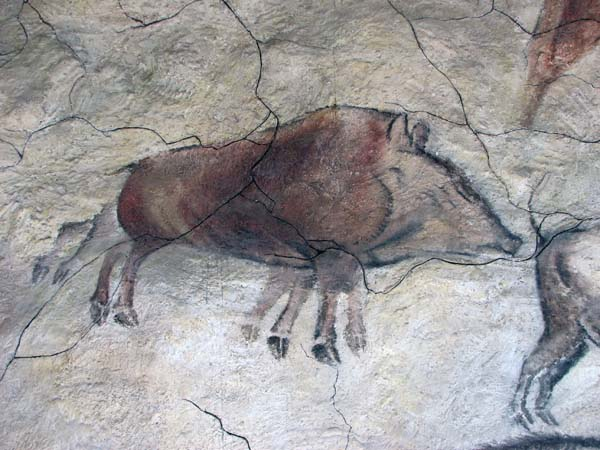
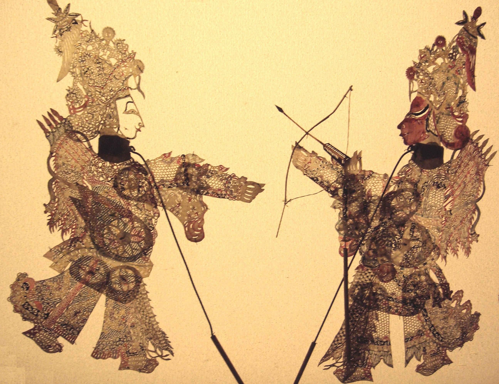

Animatsiooni ajalugu
Sõna animatsioon tuleb sõnast „animare“ (lad.k.) – hingestamine, elustamine. Animatsioon on liikumatute elementide esitamine viisil, mis tekitab vaataja teadvuses liikumise illusiooni. See on filmikunsti vanimaid alaliike, milles põimuvad erinevad kunstiliigid ja väljendusvahendid nagu kujutav kunst, muusika, draama, kirjandus, tants, fotograafia.
Teadaolevalt esimesed tõendid animatsiooni loomisest ulatuvad 15000 – 13000 eKr, kui koopaseintele joonistati kaheksa jalaga loomi, mis sümboliseerisid looma liikumist. Hiljem on leitud koopamaalinguid, kus liikumist on üritatud kirjeldada erinevate pildiseeriatega.
Liikuv metssiga Lascaux koopa seinal

Umbes 4000 a. vana Egiptuse seinamaal
Järgmiseks sammuks animatsioonimaailma võib pidada varjuteatrit.
Umbes 1780 a.
Animatsiooni eelkäijateks on erinevad optilised mänguasjad.
Taumatroop (Thaumatrope) 1825 - koosneb kahest kettast, mille ühel poolel oli linnupuur ja teisel lind. Kui nüüd neid keerutada kiiresti ümber oma telje, siis tekib efekt, kus on mõlemad pildid on nähtavad – lind justkui oleks puuris. Taumatroopi tutvustati 1825. aastal.
Fenakistoskoop (Phenakistoscope) 1833 - kus illusioon loodi pöörleva ketta abil ning vaadates läbi väikeste avadega kettast tekitati liikuva pildi illusioon. Animatsiooni tekitamiseks pidid kettad liikuma sobiva kiirusega.
Zootroop (Zoetrope) 1866 - silindri sisse on lõigatud avad ja iga ava vastu jääb pilt. Kui silinder keerlema panna, siis avast vaadates tundub nagu tegelased sees liiguvad.
Folioskoop (Flip Book) 1868 - patendeeriti kõige lihtsam animatsioon. Seisnes see volditud paberilehes, kus mõlemal leheküljel on joonistus. Liigutades pilte omavahel saame animatsiooni.
Praksinoskoop (Praxinoscope) 1877 - seestpoolt piltidega kaetud keerlev "tordikarp", mille keskel on tahuline peegel. Igaüks sai oma peeglitahul „filmi" näha. Leiutaja - Charles-Émile Reynaud.
Mutoskoop (Mutoskope) 1894 - nagu näpuraamat. Pildid vahelduvad ringiratast ning avast vaadates tundub nagu oleks tegu animatsiooniga.